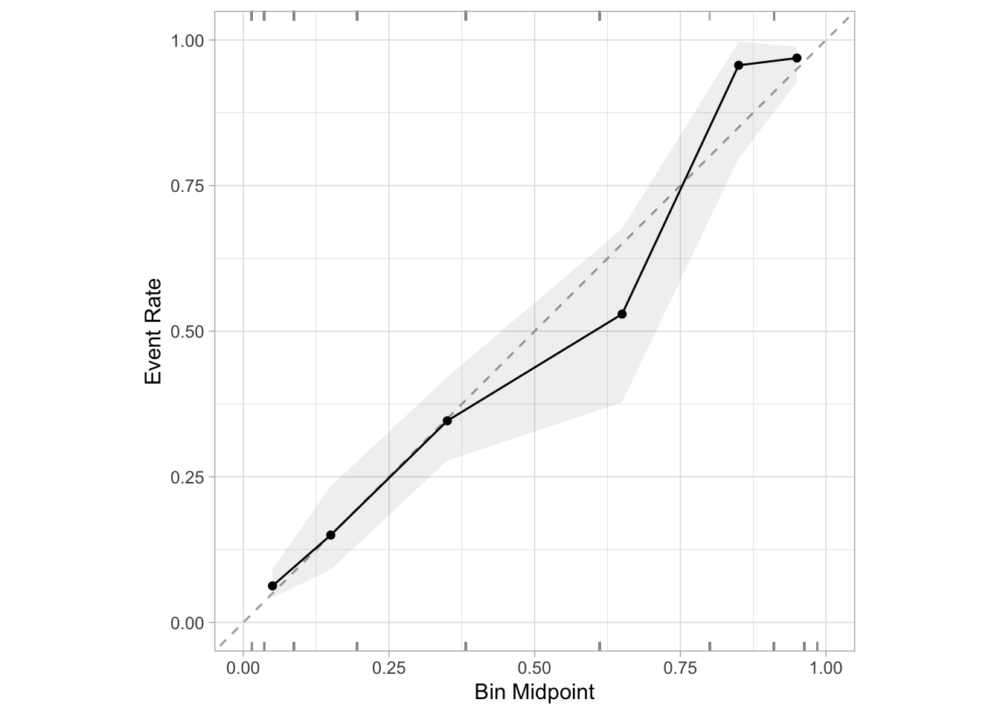
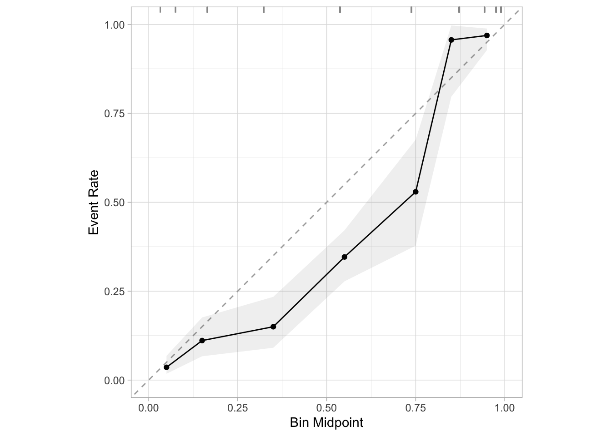

Balancing Classes in Classification Problems
And why it’s generally a bad idea
Introduction
In my last post I wrote about common classifications metrics and, especially, calibration.
With calibration in mind, this post will show why balancing your classes – which is an all-too-common practice when working on classification problems – is generally a bad idea and leads to poorly calibrated models.
Some Example Data
For the purposes of this example, I’ll use the Wisconsin breast cancer data. The data is build into the mlbench package in R and scikit-learn in python. You can also get it from the UCI Machine Learning Repository.
I’ll only be using cl_thickness, which is the indicator for clump thickness.
library(readr)
library(dplyr)
library(janitor)
library(purrr)
library(mlbench)
data(BreastCancer)
data <- BreastCancer %>%
clean_names() %>%
transmute(
cl_thickness = as.numeric(cl_thickness),
class
) %>%
as_tibble()
data %>%
slice_sample(n = 5) %>%
pretty_print()| cl_thickness | class |
|---|---|
| 4 | benign |
| 7 | malignant |
| 5 | benign |
| 3 | benign |
| 1 | benign |
The data is imbalanced: There are far more (about 2x) benign tumors than malignant ones in the sample.
data %>%
count(class) %>%
mutate(prop = n / sum(n)) %>%
pretty_print()| class | n | prop |
|---|---|---|
| benign | 458 | 0.6552217 |
| malignant | 241 | 0.3447783 |
Model Fitting
With that class imbalance in mind, let’s get to model fitting. The first thing I’ll do is fit a simple logistic regression model to predict the class (either malignant or benign) from the clump thickness.
First, I’ve written a bit of tidymodels helper code below for reuse later.
library(tidymodels)
fit_model <- function(data, spec) {
spec <- set_mode(spec, "classification")
rec <- recipe(
class ~ cl_thickness,
data = data
)
wf <- workflow() %>%
add_model(spec) %>%
add_recipe(rec)
fit(wf, data)
}
predict_prob <- function(model, data) {
predict(model, data, type = "prob")$.pred_malignant
}Now, I’ll fit a simple logistic regression model by specifying logistic_reg() as the model specification in fit_model().
library(probably)
unbalanced_model <- fit_model(
data,
logistic_reg()
)
preds <- tibble(
truth = data$class,
truth_int = as.integer(data$class) - 1,
estimate = predict_prob(unbalanced_model, data)
)And now we can make a calibration plot of our predictions. Remember, the goal is to have the points on the plot lie roughly along the line y = x. Lying below the line means that our predictions are too high, and above the line means our predictions are too low.
cal_plot_breaks(preds, truth = truth_int, estimate = estimate)
Awesome! Even with the class imbalance, our model’s probability predictions are well-calibrated. In other words, when we predict that there’s a 25% chance that a tumor is malignant, it’s actually malignant about 25% of the time.
Balancing the Training Data
So then, what happens if we balance the training data as we’re so often told to do? First, let’s balance by undersampling from the majority class.
minority_class <- data %>%
count(class) %>%
filter(n == min(n))
balanced <- data %>%
group_split(class, .keep = TRUE) %>%
map_dfr(
~ {
if (.x$class[1] == minority_class$class) {
.x
} else {
slice_sample(
.x,
n = minority_class$n,
replace = FALSE
)
}
}
)
balanced %>%
count(class) %>%
pretty_print()| class | n |
|---|---|
| benign | 241 |
| malignant | 241 |
Now we have the same number of observations for each class. Let’s go ahead and fit another logistic regression model, but this time on the balanced data.
balanced_model <- fit_model(balanced, logistic_reg())
preds$balanced_preds <- predict_prob(
balanced_model,
data
)
cal_plot_breaks(preds, truth = truth_int, estimate = balanced_preds)All of a sudden, our model is very poorly calibrated. We’re consistently overpredicting the probability of a tumor being malignant. Why is that? Think back to what we just did: We removed a bunch of examples of benign tumors from our training data.
Let’s think about that from first principles for a minute. If you had no information at all, a reasonable guess for whether or not a tumor is malignant would be the overall proportion of tumors that are malignant. In the unbalanced data, that number was about 34%. But after balancing, it’s now 50%. That means that we’ve just biased our “no-information” prediction upwards by about 16 percentage points (or 50%). And so it shouldn’t be surprising that in our calibration plot above, we see that we’re consistently over-predicting. Our probabilities are too high because the baseline rate at which the true class appears in our trainning data has just increased significantly.
An important note which I’ll circle back to later is that this intuition about a baseline guess is directly rated to the intercept term of the logistic regression model you fit.
SMOTE
“But no!” you might be thinking. “Why would you just undersample directly? You’re supposed to use an algorithm like SMOTE to overcome your class imbalance problem.”
Great! Let’s see if using SMOTE fixes our calibration issues. I’ll first use SMOTE to intelligently oversample the minority class.
library(themis)
smote <- recipe(class ~ cl_thickness, data = data) %>%
step_smote(class) %>%
prep() %>%
bake(new_data = NULL)
smote %>%
count(class) %>%
pretty_print()| class | n |
|---|---|
| benign | 458 |
| malignant | 458 |
Now that we have balanced classes thanks to SMOTE, let’s fit another logistic regresion model and see if it’s any better-calibrated.
smote_model <- fit_model(smote, logistic_reg())
preds$smote_preds <- predict_prob(
smote_model,
data
)
cal_plot_breaks(preds, truth = truth_int, estimate = smote_preds)Interesting, same problem. With SMOTE, we still make very similar errors to the ones we made in the case where we naively undersampled from our majority class. But let’s think back to first principles again, because the exact same rationale applies. When we undersampled, we ended up artificially increasing the baseline rate of malignant tumors in our training data, which resulted in predictions that were too high. With SMOTE, we’re doing the exact same thing: We’ve stil rebalanced our data to 50/50, we’ve just done it a fancier way. So of course we’ll have the same problem with overprediction.
A Random Forest
“But no!” you might be thinking. “You need to use a more complicated model like a random forest, because logistic regression won’t pick up on complexities in your data well enough to be well-calibrated.”
Great! Let’s try a random forest:
rf <- fit_model(smote, rand_forest())
preds$rf_preds <- predict_prob(
rf,
data
)
cal_plot_breaks(preds, truth = truth_int, estimate = smote_preds)
Same issue again, and the same logic holds. In fact, it’s even more straightforward with tree-based models. In a decision tree, you would determine a predicted probability by seeing what proportion of the labels in the leaf node that you end up in based on the features belong to the positive class. But then there’s the same logic as before: We’ve just artifically increased the number of instances of the positive class dramatically, so of course the proportion of labels belonging to the positive class in our leaf nodes will increase.
Coefficients
Looking at the coefficients of our three models can help understand what’s going on here.
list(
"Original" = unbalanced_model,
"Undersampled" = balanced_model,
"Smote" = smote_model
) %>%
map(tidy) %>%
imap(~ select(.x, "Term" = term, !!.y := "estimate")) %>%
reduce(inner_join, by = "Term") %>%
pretty_print()| Term | Original | Undersampled | Smote |
|---|---|---|---|
| (Intercept) | -5.1601677 | -4.3091705 | -4.3511577 |
| cl_thickness | 0.9354593 | 0.8889979 | 0.8993583 |
In all three models, the coefficient associated with the clump thickness is almost exactly the same. This should make sense intuitively: Our sampling was at random, so the relationship between the clump thickness and whether or not the tumor was malignant shouldn’t change at all.
The thing that does change, though, is the intercept term. In both the model where we undersampled from the majority class and in the SMOTE model, the intercept term is significantly higher than it is in the original model on the unbalanced data. This should feel similar intuitively to the idea of the baseline guess from before. As its core, the intercept term in your logistic regression model is the guess you’d make with “no” information (in this particular case, no information means a clump thickness of 0).
We can illustrate this more clearly with three intercept-only models:
unbalanced_intercept_only <- glm(class ~ 1, data = data, family = binomial)
undersampled_intecept_only <- glm(class ~ 1, data = balanced, family = binomial)
smote_intercept_only <- glm(class ~ 1, data = smote, family = binomial)Now, let’s compare the intercept coefficients of these two models on a probability (read: not a log-odds) scale.
convert_log_odds_to_probability <- function(x) {
odds <- exp(x)
odds / (1 + odds)
}
unbalanced_intercept <- coef(unbalanced_intercept_only)
undersampled_intercept <- coef(undersampled_intecept_only)
smote_intercept <- coef(smote_intercept_only)
intercepts <- tibble(
original = convert_log_odds_to_probability(unbalanced_intercept),
undersampled = convert_log_odds_to_probability(undersampled_intercept),
smote = convert_log_odds_to_probability(smote_intercept)
)
pretty_print(intercepts)| original | undersampled | smote |
|---|---|---|
| 0.3447783 | 0.5 | 0.5 |
And it’s just as we expected: The intercept coefficient in the SMOTE model and the undersampling model are exactly 1/2, which corresponds to the fact that we balanced the classes to be exactly 50/50. And the intercept in the original model with the unbalanced classes is exactly the percentage of the data made up by the true class (malignant).
When To Rebalance
There are some times where re-balancing the classes in your training data might make sense. One application that comes to mind is if you have strong prior information that your training data is actually biased, and is over-representing one of the two classes.
For instance, let’s imagine we have data from 1000 breast cancer patients and we know a priori that about 20% of tumors are malignant, but in the training data, maybe 40% of the tumors we have are malignant. Depending on the long-term goal of the project, it might make sense to undersample from the malignant cases to get the overall rate of tumors being malignant down to around the 20% prior.
The rationale behind doing this would be that if you wanted your model to generalize well to future cases (outside of your training set) and you knew that in the broader population, about 20% of cases are malignant, your biased training data could very well result in biased predictions out-of-sample even if your predictions look good in-sample.
Conclusion
In the previous post, I wrote about calibration. In short, I think calibration is the single most important metric in evaluating the performance of classification models.
And so with that in mind, the main takeaway of this post is that you should be very careful about trying to “fix” the “problem” of class imbalances when you’re working on classification problems. If I could summarize the principle that I would follow in just a sentence, it would be that class imbalances often reflect important information about the prevalence of your classes in the real world, and it’s often risky to dismiss that information in the name of having data that’s split equally. In other words, class imbalances are usually not a problem at all. They’re a feature, not a bug.